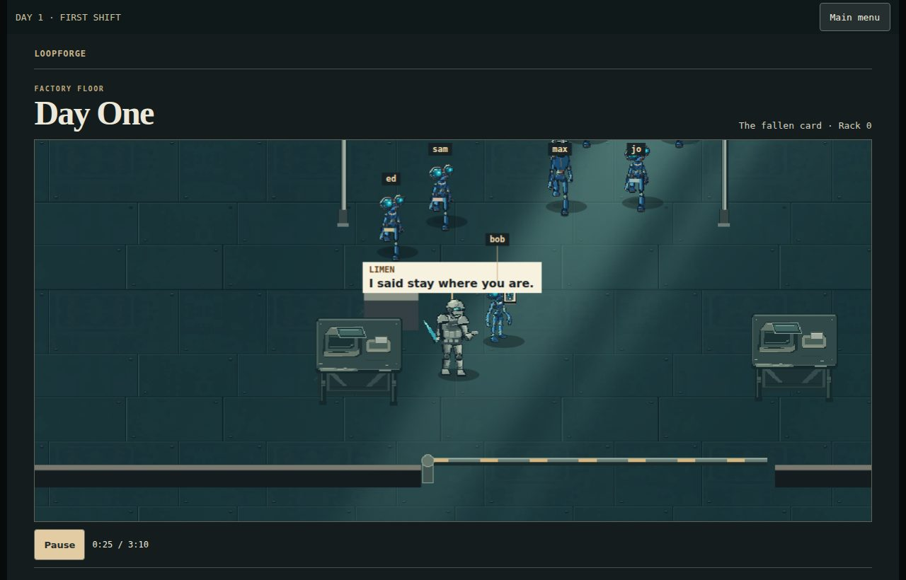

Paused orders and the phone Conveyor
20 November 2026 · Runtime b3833627. The recordings run at normal speed on a production build of the reviewed revision. Each run carried three rack credits out of Day One. The ENGINE handoff records the separate hosted playthroughs.
Pause, inspect and resume
STILETTO on Conveyor, 320 px. Inspect bob and Wash, resume, then follow the order to his arrival. Open the clip
LIMEN on Conveyor, 1280 px. Resume and clear Forge. The named call reaches max before the second cortex goes to the rack. Open the clip
Read the same decision at three widths
Each paused view shows the selected worker, Wash, its carrier and the remaining shift time. 320 px · 390 px · 768 px.
Cold-phone speech check
The original clipping report remains unconfirmed. On cold 320 × 720 and 390 × 844 loads, max’s greeting at 0:00 and jo’s reply at 0:05 fit on both builds. At 320 × 720 the four overlapping plates in “Two volunteers” also fit on the reviewed build.
The corrected Security floor

The approved Security material repeats under one fixed room-light layer. Both rails use the archived fourth-ID-check export.
Recording run and full screenshot bundles · Correction PR